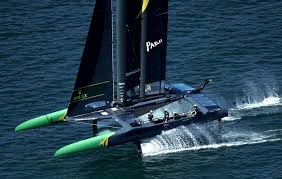

Quatrième idée:
La quatrième idée était d'avoir un site qui expliquait les bateaux à voiles.
J'allais pouvoir faire plein de lien entre les pages du sites, et si on regarde le code source de ce site, on remarque les résidus de cette idée.
Le problème: beaucoup de bla-bla, pas beaucoup de site.
(faite ctrl+u sur les différentes pages si vous êtes curieux)
J'allais ausi mettre plein d'images en exemples, mais bon, j'était lâche. (et je le suis toujours)
